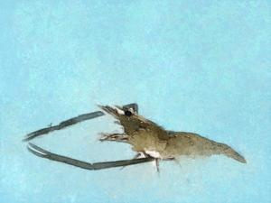
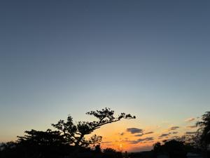
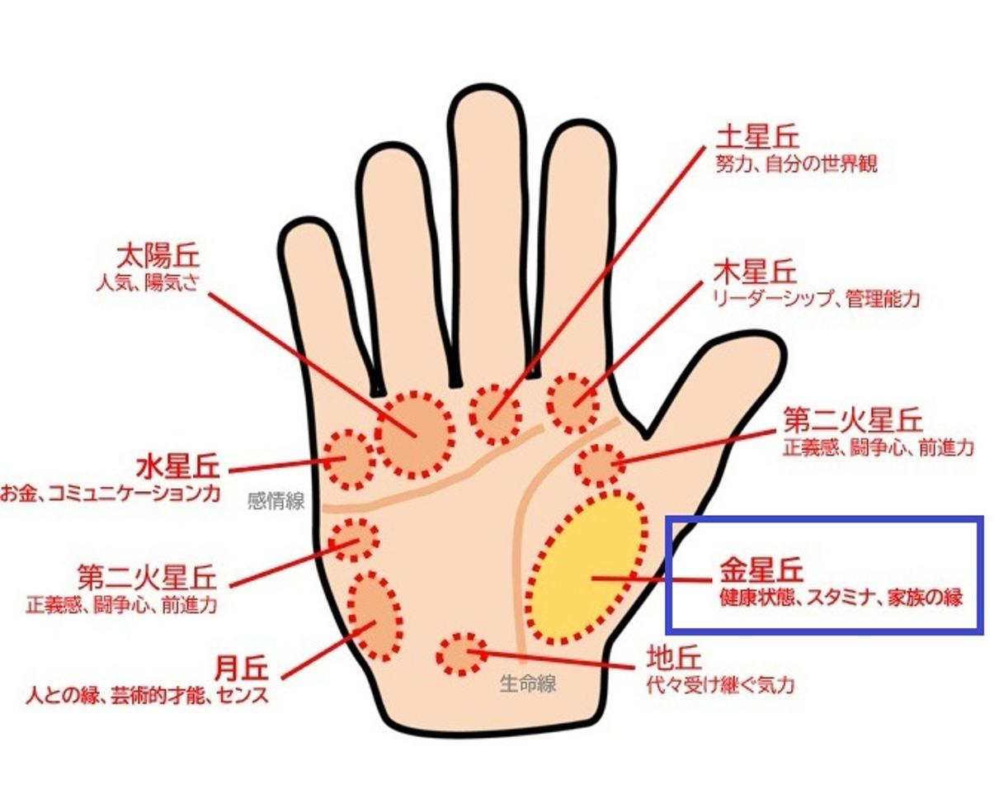

うるがいの話 ある日
最新: 金星丘【うるがいの話 ある日】とは 一日だけのプログです
『うるがいの話』の最新一日だけのプログで、通信料が少なく経済的だ。カニの画像をクリックすると全ての日付が載る『うるがいの話』サイトを表示します
|
|
【うるがいの話】 うるがい(ｳﾙｶﾞｲ urugai)とは、『もずくがに』の名前でとても大きくなります。 |
|---|---|
|
|
【カミマヤーの話】 猫のことを方言でマヤーといいます。カミマヤー（kamimayaa）とは、神の猫のことです。 |
 |
【たながぁの音楽】 たながぁ（ﾀﾅｶﾞｰ tanagaa）とは手長えびのことで、何種類かあり大きいのは車 エビぐらいになります。 |

|
【ぶながぁの話】 ぶながぁ(ﾌﾞﾅｶﾞｰ bunagaa)とは、赤い髪の毛、赤い身体、そして身長は１ｍ２０ｃｍ ぐらい、川の蟹を食べているの目撃された。場所は沖縄県国頭郡大宜味村のと ある村僕の隣近所に住んでいる爺さんから、聞いた話です。 |
|
|
【ギーマの話】 ギーマ(giima)とは、山原の里山に咲くスズランに似た、 花を付けます。実は食べられます、 気が付くと口の周りが紫になっています。 |
2026年11月23日 (月）金星丘
15:10

ウォーキングに出かける前にお隣の奥さんとの会話。『ここに
シワが多いとストレスが多い』を言う、私の手のひらを見ると
レベルが違う、はるかにシワが多い！。確かに、ここ最近の出
来事でストレスが・・・。

本当なのか調べてみる。ストレスとは余り関係ないみたい。
本日は親指の横→ここを金星丘と言います。
主に愛情などを意味します。
ここに膨らみがある人は愛がいっぱいありますよー🈵
更にこの金星丘に格子状のシワが多い人は優しさ愛情に溢れる
人です。
あるとラッキーな線】②金星帯
中指と薬指を取り囲む半円の線です。愛情の深さや魅力などを
意味します。もし金星帯が複数有った場合、魅力が高まってい
る証拠です。